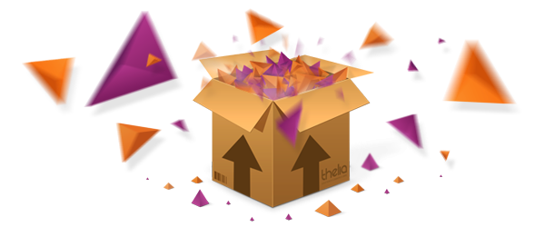

THELIA
Solution e-commerce 100% libre
Créée en 2005
Objectif : solution souple et modulaire
Publiée sous licence GPL en 2006
Editée par OpenStudio
Septembre 2012 : fusion Octolys / OpenStudio
Société de Services en Logiciels Libres
26 collaborateurs
Quelques clients
Quelques exemples de réalisations
THELIA
Nos projets pour 2013
Espace contributeurs
TheliaTour
Salon e-commerce
Thelia Aujourd'hui
- Version 1.5 Long Term Support
- Sourceforge.net
- Documentation complète
- Communauté active
- +7 000 boutiques
- +300 Plugins
- Paysite Cash
- Shoppingflux
- SoColissimo
- Mailjet
Syntaxe
Boucle
#DESCRIPTION
prix : #PRIX
Filtre
#FILTRE_egalite(variable à tester||valeur||affichage si égale)
Boucle test
afficher si la condition est vérifiée
afficher si la condition n'est pas vérifiée
<\//TEST_nom_boucle>
Boucle Répéter
texte à répéter
Thelia V2
- Renforcer les performances
- Internationalisation du code source
- Faciliter l'intéropérabilité
- De nouvelles fonctionnalités
- Nouvelle documentation
- Solution toujours plus modulaire
Fonctionnalités
- Moteur de taxes
- Combinaison de déclinaisons
- Gestion de code promo avancé
- Multi rubriquge
Symfony components
- Dependency Injection
- Event Dispatcher
- Http Kernel
- Http Foundation
- Config
- Console

- Gestion de dépendance des librairies
- Utilisation de l'autoloader
- Dump d'un class map
Version 1.6
Intégration continue
PHP FIG
- PSR-0 (class autoloader and namespaces)
- PSR-1 (coding standard)
- PSR-2 (coding standard)
- PSR-3 (logger interface)
Tpex
Nouveau Parser
Indépendant !
Syntaxe
Boucle
{ifloop rel="loop_id"}
Display if loop return at least 1 result
{loop id="loop_id" type="product" arg1="value1" arg2="value2"}
price : #PRICE
{endloop}
Display if loop return at least 1 result
{elseloop}
Display if loop return nothing
{endifloop}
Boucle test
{if var==value && var2==value2}
display if true
{else}
display if false
{endif}
Filtre
{#VAR|strtoupper}
Codons !
Structure d'un plugin (local/modules)
MyModule
MyModule.php
Config
config.xml
Loop
Product.php
MyLoop.php
Actions
Customer.php
Cart.php
Model
...
Config.xml
Boucle MyModule_Product
namespace MyModule\Loop;
use Thelia\Tpex\Element\Loop\BaseLoop;
use Thelia\Tpex\Element\Loop\LoopResult;
use Thelia\Tpex\Element\Loop\LoopResultRow;
class Product extends BaseLoop
{
public function defineArgs()
{
}
public function exec()
{
}
}
defineArgs
/**
* @return array defining all loop arguments
*/
public function defineArgs()
{
return array(
"ref",
"id" => "optional",
"stock" => array(
"optional",
"default" => 1
)
);
}
Tous les arguments sont accessibles comme des propriétés publics de la classe
exec
/**
* @return \Thelia\Tpex\Element\Loop\LoopResult
*/
public function exec()
{
$result = new LoopResult();
if($this->stock < 0) $this->stock = ($this->stock * -1);
$this->stock += 10;
for ($i=0; $i < $this->stock; $i++) {
$loopResultRow = new LoopResultRow();
$loopResultRow->set('modulo', $i%2);
$result->addRow($loopResultRow);
}
return $result;
}
Récapitulons
- Nombre inifini de boucles par module
- Une API claire permettant d'implémenter facilement une nouvelle boucle
What else ?
La boucle product de Thelia ne me convient pas, je veux implémenter ma propre boucle product !
Let's do it !
Actions
Même principe que thelia 1 mais une implémentation différente
config.xml
classe action
namespace MyModule\Actions;
use Symfony\Component\EventDispatcher\EventSubscriberInterface;
use Thelia\Core\Event\ActionEvent;
class Customer implements EventSubscriberInterface
{
public static function getSubscribedEvents()
{
return array(
"action.createCustomer" => "create"
);
}
public function create(ActionEvent $event)
{
//code here
}
}
Récapitulons
- Nombre infini d'actions par module
- Gérer une priorité d'exécution
- Possibilité de stopper une action
What else ?
Je veux remplacer le traitement des actions par défaut avec les miennes !
Let's do it
namespace MyModule\Actions;
use Symfony\Component\EventDispatcher\EventSubscriberInterface;
use Thelia\Core\Event\ActionEvent;
class Customer implements EventSubscriberInterface
{
public static function getSubscribedEvents()
{
return array(
"action.createCustomer" => array("create", 0)
);
}
public function create(ActionEvent $event)
{
//code here
$event->stopPropagation();
}
}
Ce n'est pas tout !
Support base de données (postgresql, sqlite, autres)
Cache multi niveaux
Reverse proxy (Varnish)